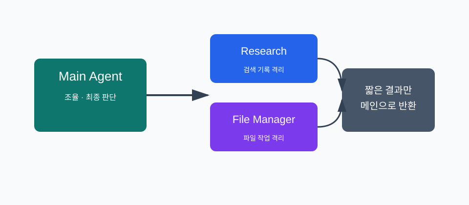
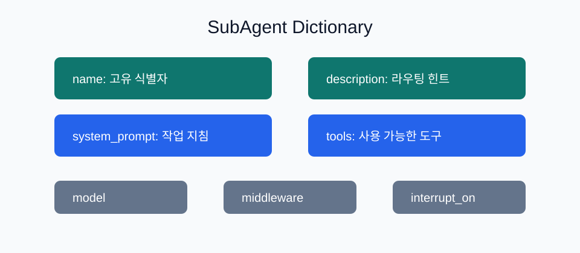
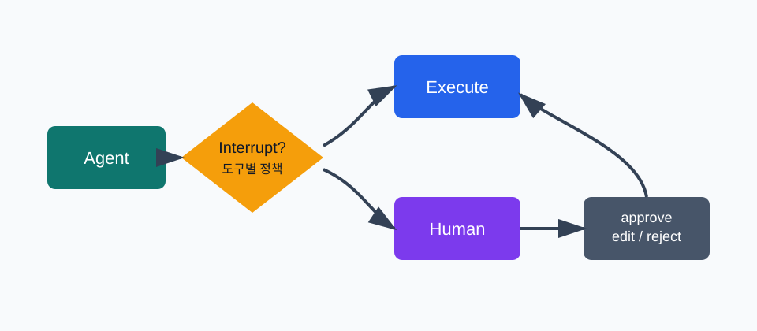
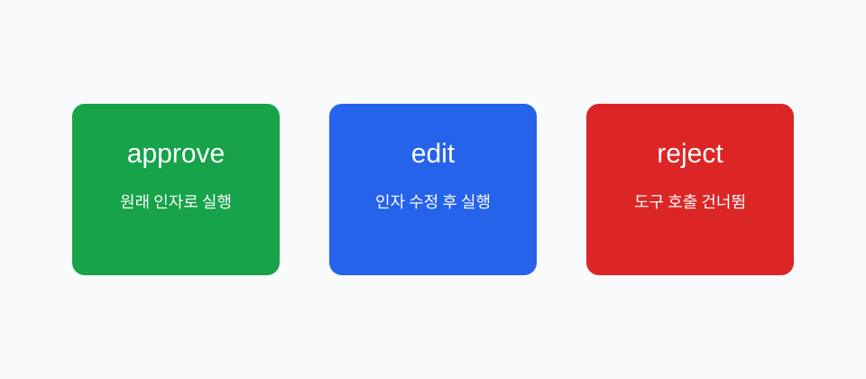
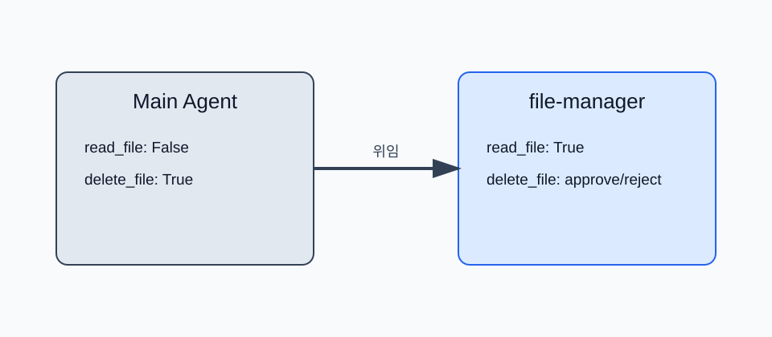

AI Odyssey
Deep Research
YouTube · @AI_odysseys
Research Deck
Subagents & Human-in-the-loop
컨텍스트는 격리하고, 위험한 실행은 사람에게 묻는다
발표자보현
채널AI Odyssey
일시2026년 5월 13일
AI OdysseyDeep Research
§0 · Bridge
1주차에서 2주차로
| 1주차 | 2주차 |
|---|---|
| Deep Agents 전체 지도 | 서브에이전트와 승인 흐름 심화 |
create_deep_agent() 시작점 |
subagents=와 interrupt_on= 실전 |
| 네 가지 능력 개요 | 위임과 제어를 실제 코드로 연결 |
오늘의 한 문장: 서브에이전트는 컨텍스트를 격리하고, HITL은 위험한 실행을 사람 승인으로 제어한다.
AI Odyssey
01 / 15
AI OdysseyDeep Research
§1 · Why
단일 컨텍스트가 커지는 순간
| 작업 | 컨텍스트에 쌓이는 것 |
|---|---|
| 웹 검색 | 검색 결과, raw content, 중간 판단 |
| 파일 읽기 | 긴 파일 본문, 줄 번호, 비교 결과 |
| 데이터 분석 | 표, 로그, 오류, 재시도 기록 |
메인 에이전트가 모든 중간 결과를 직접 들면 최종 판단에 필요한 정보가 뒤로 밀린다.
AI Odyssey
02 / 15
AI OdysseyDeep Research
§1 · Isolation
서브에이전트는 격리된 작업방

메인은 하위 작업을 맡기고, 서브에이전트는 자체 컨텍스트에서 일한 뒤 짧은 결과만 반환한다.
AI Odyssey
03 / 15
AI OdysseyDeep Research
§2 · Fields
SubAgent 필드

description은 라우팅 힌트,system_prompt는 작업 품질,tools는 행동 범위를 결정한다.
AI Odyssey
04 / 15
AI OdysseyDeep Research
§2 · Code
기본 SubAgent 코드
research_subagent = {
"name": "research-agent",
"description": "Deep Agents 개념을 짧게 조사하고 핵심만 요약한다.",
"system_prompt": "도구 결과를 길게 복사하지 말고 5문장 이하 요약만 반환한다.",
"tools": [summarize_notes],
}
AI Odyssey
05 / 15
AI OdysseyDeep Research
§3 · Patterns
범용 vs 전문 서브에이전트
| 패턴 | 사용 시점 |
|---|---|
general-purpose |
전문 지침 없이 컨텍스트 격리만 필요 |
| 전문 SubAgent | 도구, 모델, 출력 형식이 달라야 함 |
CompiledSubAgent |
이미 만든 LangGraph 워크플로우를 꽂아야 함 |
처음에는 딕셔너리 기반 전문 서브에이전트로 충분하다.
AI Odyssey
06 / 15
AI OdysseyDeep Research
§3 · Best
좋은 설명이 라우팅을 만든다
| 나쁜 설명 | 좋은 설명 |
|---|---|
| Does finance stuff | 재무 데이터를 분석하고 신뢰도 점수와 함께 투자 인사이트를 반환한다 |
| Handles files | 파일 읽기·삭제 요청을 처리하고 민감 작업은 승인 요청을 반환한다 |
메인 에이전트는
description을 보고 누구에게 맡길지 결정한다.
AI Odyssey
07 / 15
AI OdysseyDeep Research
§4 · HITL
HITL이 필요한 순간
| 도구 | 위험 |
|---|---|
delete_file |
되돌리기 어려운 삭제 |
send_email |
잘못된 수신자와 외부 전송 |
write_file |
기존 데이터 덮어쓰기 |
deploy |
운영 환경 변경 |
모델이 할 수 있어도, 바로 해도 되는 것은 아니다.
AI Odyssey
08 / 15
AI OdysseyDeep Research
§4 · Flow
Human-in-the-loop 흐름

도구 호출 직전에 멈추고, 사람의 결정을 받아 같은 상태에서 재개한다.
AI Odyssey
09 / 15
AI OdysseyDeep Research
§4 · Config
`interrupt_on` 기본 구성
agent = create_deep_agent(
tools=[delete_file, read_file, send_email],
interrupt_on={
"delete_file": True,
"read_file": False,
"send_email": {"allowed_decisions": ["approve", "reject"]},
},
checkpointer=MemorySaver(),
)
체크포인터와 같은
thread_id가 있어야 멈춘 지점에서 이어갈 수 있다.
AI Odyssey
10 / 15
AI OdysseyDeep Research
§5 · Decisions
승인 결정 3종

approve는 그대로 실행,edit은 인자 수정 후 실행,reject는 호출을 건너뛴다.
AI Odyssey
11 / 15
AI OdysseyDeep Research
§5 · Resume
인터럽트 처리 루프
result = agent.invoke(input, config=config)
if result.get("__interrupt__"):
interrupts = result["__interrupt__"][0].value
decisions = [{"type": "approve"}]
result = agent.invoke(
Command(resume={"decisions": decisions}),
config=config,
)
재개 호출에는 첫 호출과 같은
config를 넘긴다.
AI Odyssey
12 / 15
AI OdysseyDeep Research
§5 · Multiple
여러 도구 호출
| 규칙 | 설명 |
|---|---|
| 한 번에 묶임 | 여러 승인 요청이 단일 인터럽트로 반환될 수 있음 |
| 순서 보존 | action_requests와 같은 순서로 decision 제공 |
| 정책 확인 | 도구별 allowed_decisions를 UI에 표시 |
여러 개가 멈추면 결정도 여러 개다.
AI Odyssey
13 / 15
AI OdysseyDeep Research
§5 · Edit
도구 인자 편집
decisions = [{
"type": "edit",
"edited_action": {
"name": action["name"],
"args": {
"to": "team@company.com",
"subject": "2주차 자료 공유",
"body": "발표 자료를 공유합니다.",
},
},
}]
edit은 모델의 의도는 살리되, 실행 인자를 사람이 바로잡는 선택지다.
AI Odyssey
14 / 15
AI OdysseyDeep Research
§6 · Subagent HITL
서브에이전트별 승인 정책

메인에서는 안전한 읽기라도 파일 관리 서브에이전트에서는 승인 대상으로 바꿀 수 있다.
AI Odyssey
15 / 15
AI OdysseyDeep Research
Thank you
Q&A
마무리
| 기능 | 한 줄 역할 |
|---|---|
| Subagents | 무거운 하위 작업을 격리해 메인 컨텍스트를 지킨다 |
| Human-in-the-loop | 위험한 도구 호출 앞에서 사람의 결정을 받는다 |
| 둘의 결합 | 전문 에이전트마다 다른 위험 정책을 적용한다 |
위임은 컨텍스트를 줄이고, 승인은 사고를 줄인다.